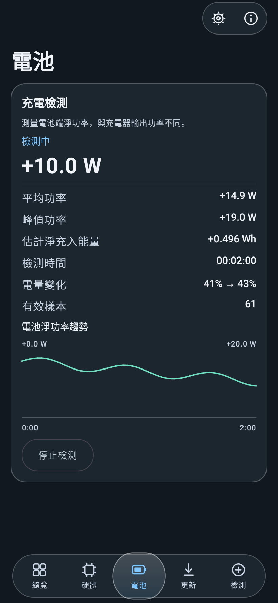

裝置與硬體資訊
查閱處理器、記憶體、儲存、螢幕及感測器。辨識支援的手機和平板型號，包含部分地區版本。
Android 裝置工具箱
處理器、溫度、充電功率和藍牙配件電量，集中在 Galaxy Box。主要為 Samsung Galaxy 手機設計，也支援其他 Android 裝置。
技術預覽版Android 8.0 以上

查閱處理器、記憶體、儲存、螢幕及感測器。辨識支援的手機和平板型號，包含部分地區版本。
記錄電池端淨功率、峰值與充電歷程。裝置提供資料時，也能查看 CPU、SoC、GPU 與電池溫度。
查看編解碼資訊與配件電量。桌面電量條可調整寬度，並顯示可讀取的已連線配件。
提供硬體檢測、貼膜輔助、桌面小工具，也可按需啟用浮動監控、效能通知和 App 用量分析。
支援 Android 8.0 以上。配件電量、電池循環與溫度讀值依機型及韌體而異。
下載後在手機上開啟檔案。若 Android 提示允許安裝，請依系統提示替開啟檔案的 App 授權。
一般硬體總覽可直接使用。進階電池健康讀取需要啟動並授權 Shizuku。部分裝置仍可能缺少資料。